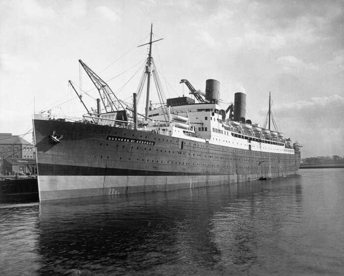
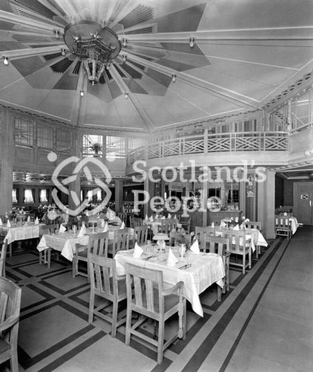
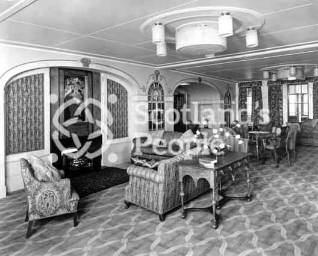
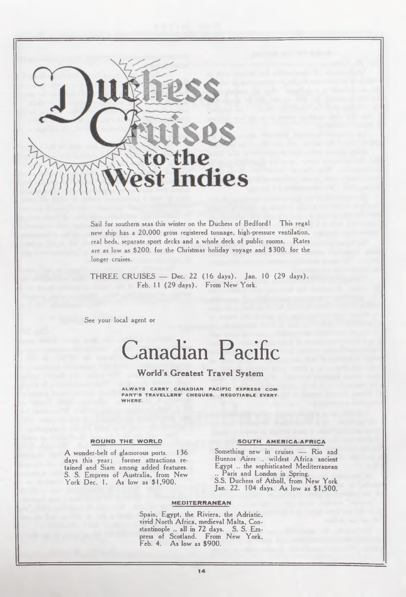
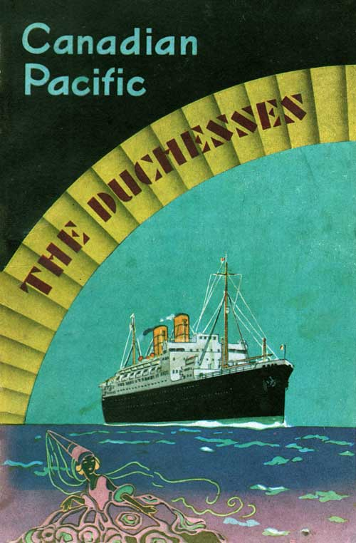
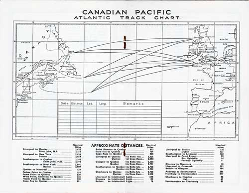

The Names He Carried
Laurence's Ship and Journey, 1929

TSS Duchess of Bedford. Photograph supplied by Doug Garceau; original source and date not recorded.
1. The journey, from the documents
| Date | What the record says | Document |
|---|---|---|
| 13 Apr 1929 | Janet Crombie's visa no. 469891, issued at Washington. | List D, left |
| 3 Sept 1929 | U.S. immigration visa no. 27768 issued to Lawrence Brown at Glasgow, under "Sec 5" of the Act of 1924. (On the U.S. manifest the date 3.9.29 is written over another date that is struck through.) | Detroit card; List D, left |
| 7 Sept 1929 | Duchess of Bedford, official no. 160482, Canadian Pacific, sails from Greenock, bound for Quebec & Montreal. Line 8: CROMBIE, Janet, 29, H'wife. Line 9: BROWN, Laurence, 22, Grocer. Both: 39 Greive St., Dunfermline. Class column headed "Cabin." Port contracted to land: Montreal. Ticket numbers, as read in the book's source notes from the full image (image 30 of 90): Janet 32480, Laurence 33082. On the smaller copy in the file the first digits are cut off ("...480", "...082"). A pencil mark beside Laurence's line reads "USA." | UK outward list |
| 7 Sept 1929 | Master's name on the outward list: two readings. The book's source notes, made from the full original image, read "H. Sibbons." Our reading of the smaller copy in the file is "R. GIBSON[?]" (uncertain). Provisions certified for 900 statute adults for a voyage of 21 days. Ship's figures written on the form: 16610 and 505. | UK outward list |
| 7 Sept 1929 | U.S. alien manifest List D: Janet on line 3, Lawrence on line 10. Line 9 (Peter Ross Stewart) is struck through, "To Canada." Lines 14–31 stamped NOT USED. | List D, left |
| 13 Sept 1929 | Arrival heading: "Arriving at Port of QUEBEC & MONTREAL," dated 13 SEP 1929 (date stamp faint). Lawrence's nearest relative: "Mother:- Mrs. Elizabeth Anderson, 39, Grieve St. Dunfermline." Going to: "B.-in-Law:- Mr. Thomas Crombie, 1534, So. Kostner Ave., Chicago, Ill." Passage paid by: Self. | List D, right |
| 13 Sept 1929 | "Seaport of landing: QUEBEC, P.Q." Date of landing 9/13/29. | Detroit card |
| 13 Sept 1929 | Back of the Detroit card: round stamp "PUBLIC HEALTH SERVICE · U.S. · PASSED · MEDICAL EXAMINATION," Quebec. Remarks: examined at Quebec, Canada, 9/13/29, signed by a U.S. Immigrant Inspector (name read as "Alfred [?] Heald [?]") and a second Immigrant Inspector ("Henry [?] Reppy [?]"). "Class: Q" written large in ink. "90-day" printed beside "514 Visitor." Two dark smudges on the card; no fingerprint can be made out on this copy. | Detroit card, back |
| 15 Sept 1929 | Admitted at Detroit (stamped SEP 15 1929). Money shown $50. Purpose "Seek Work," "Perm." Previous disposition "CP #21." Present disposition "adm." | Detroit card |
| 15 Sept 1929 | His own later account: entry at Detroit "under the name of Lawrence Brown on Sept. 15, 1929 on the C. P. R. R." Certificate of Arrival no. 3-234422. | 1943 petition; 1943 affidavit |
| 21 June 1941 | Later card: "MONTREAL: Sept, 1929: D/Bedford." | Blaine card |
Weather, as recorded
These readings are from the book's source notes, which cite the official weather records named; they have not been re-checked here.
- 7–8 Sept 1929, Scotland: Met Office Daily Weather Report — high pressure over the British Isles; forecast for southwest Scotland "Light or moderate westerly breeze; fair; warm"; Renfrew maximum 67°F, no rain. The Minnedosa reported fog west of Ireland. 8 Sept: a low near Iceland.
- 13 Sept 1929, Quebec: maximum 61°F, 0.43 in. of rain. Montreal (McGill): maximum 64°F, 0.64 in. of rain. (Environment and Climate Change Canada.)
- 15 Sept 1929, Wayne, Michigan: maximum 72°F, minimum 34°F, no rain. (NOAA GHCN-Daily.)
2. Where the records disagree
- Landing port: Quebec (1929 Detroit card) vs Montreal (1941 Blaine card). The UK list gives Montreal as the port contracted to land.
- Ship's master: "H. Sibbons" (book notes, full image) vs "R. GIBSON[?]" (our reading of the smaller copy).
- Spelling: "Laurence" on the UK outward list; "Lawrence" on every U.S. form.
- Street: "Greive St." on the UK outward list; "Grieve St." on the U.S. manifest and Detroit card.
- Last foreign residence: Dunfermline on every 1929 form; "Ayr, Scotland" on the 1943 petition.
- Height: 6 ft (1929 card and manifest) vs 5 ft 11 in (1943 petition).
3. The ship
| Name | Duchess of Bedford; renamed Empress of France in 1947 [1] |
| Owner / operator | Canadian Pacific Railway Co. (Canadian Pacific Steamships, managers) [2] |
| Official number | 160482 [2] — the same number written on the 1929 outward list |
| Signal letters | G N T V [2] |
| Builder | John Brown & Co., Clydebank, yard no. 518 [1][2] |
| Launched | 24 January 1928, by Mrs. Stanley Baldwin, wife of the Prime Minister [2]. One source gives 25 January [3]. |
| Completed / maiden voyage | Completed May 1928 [1]; maiden voyage Liverpool–Quebec–Montreal, 1 June 1928 [2][3] |
| Tonnage | 20,123 gross [1][3][4]; 20,448 gross, 11,335 net in a later register [2] |
| Size | 581.9 ft registered length, 75.2 ft breadth [2][4]; about 601 ft overall [1][3] |
| Engines / speed | Steam turbines, twin screws, 18 knots [1][3] |
| Look | Two masts, two funnels [3] |
| Passengers as built | 580 cabin, 480 tourist, 510 third; crew 510 [1] |
| Cabins | All cabins had hot and cold running water [1] |
| Nickname | The four sisters were called the "Drunken Duchesses" for their tendency to roll [1] |
| Sisters | Duchess of Atholl, Duchess of Richmond, Duchess of York [1][3] |
| Usual route | Liverpool to Quebec and Montreal via Belfast and Greenock (as printed on Duchess of Bedford passenger lists of 1931–1932) [3]. Built to go up the St. Lawrence past Quebec to Montreal so passengers could go on by train to Chicago and the Midwest [1]. |
4. Inside the ship, 1928

Dining saloon on A Deck, looking aft. © Crown copyright, National Records of Scotland, UCS1/116/31/16, IMGAAA00564.

Drawing and Observation Room on the Promenade Deck, looking toward the port side. © Crown copyright, National Records of Scotland, UCS1/116/31/3, IMGAAA00561.

Cabin No. 103, three berths, A Deck. © Crown copyright, National Records of Scotland, UCS1/116/31/22, IMGAAA00565. This is not known to be their cabin.
Printed material from Canadian Pacific
These are Canadian Pacific's own advertising and passenger papers for the Duchess ships. None of them is from Laurence and Janet's own sailing.

Canadian Pacific advertisement, The Mitre, November 1928, page 14: "Duchess Cruises to the West Indies" on the Duchess of Bedford, from $200. These are winter cruise prices from New York, not the 1929 Atlantic fare. Scan: Bishop's University. Full page and text.

"Canadian Pacific · The Duchesses," passenger booklet cover from a Duchess of Bedford sailing of 4 September 1931. Digitized by GG Archives. Document page.

Canadian Pacific Atlantic Track Chart, with a table of approximate distances and a blank log for the ship's daily position. From the same 1931 material. Digitized by GG Archives. Document page.
5. The rules they travelled under
- U.S. Immigration Act of 1924: each immigrant needed a consular immigration visa stating whether he was a quota immigrant (section 5) or non-quota (section 4); fee $9 per visa [10]. Lawrence's card reads "Sec 5."
- Head tax: $8 per immigrant, set by the Act of 1917 [11].
- New quotas took effect July 1, 1929 — two months before he sailed. Great Britain and Northern Ireland: 65,721 a year [9], up from 34,007.
- From May to October 1929 the UK recorded 2,345 (May), 1,329 (June) and 1,562 (July) British subjects leaving to live in the U.S. [12]
- Arrivals at Detroit from Canada were recorded on card manifests; the Detroit cards are NARA microfilm M1478 [13].
6. The rail leg
- His 1943 petition says he came into the U.S. at Detroit "on the C. P. R. R." (Canadian Pacific Railway).
- Canadian Pacific and the Michigan Central ran a pooled through train, the Canadian, Montreal–Toronto–Detroit–Chicago, using the Michigan Central tunnel under the Detroit River (opened 1910) [14]. Which train he took is not recorded.
7. Fares (not his fare)
- One source gives Cabin Class on a Duchess at $157.50 and Third Class at $87.50, Canada–England, one way; that source does not give the year [8].
- Canadian Pacific fare sheets of the period survive in the UBC Chung Collection, including a tourist third cabin fare list dated March 1, 1929 [7], and deck plans of the Duchesses dated Dec. 1928, Apr. 1929 and Jul. 1929 [6].
- What Laurence and Janet paid, who bought the tickets, and their cabin numbers: not in any document held.
8. Still unknown
- Ticket numbers 32480 and 33082 need re-checking on the full original image.
- Cabin and berth; fare; payer beyond "Self."
- Janet's money shown.
- Whether the ship called at Liverpool and Belfast before Greenock on this sailing.
- Certificate of Arrival 3-234422.
- Which train, and the date and time they left Quebec.
Sources
- Wikipedia, RMS Empress of France (1928)
- Liverpool Ships, Empress of France (ex Duchess of Bedford)
- GG Archives, SS Duchess of Bedford
- Norway Heritage, S/S Duchess of Bedford
- Papers Past, Evening Post, 9 January 1928
- UBC Chung Collection, Duchess deck plans 1928–1929
- UBC Chung Collection, Tourist third cabin fares, 1 March 1929 (TT2)
- TrainWeb, Canadian Pacific Atlantic fares (undated)
- Presidential Proclamation 1872, March 22, 1929 (quotas)
- Immigration Act of 1924, text (DocsTeach)
- U.S. Customs and Border Protection, Immigration controls 1917–1924
- Hansard, 12 December 1929, British immigrants to the U.S.
- NARA Prologue, U.S.–Canada immigration records
- Wikipedia, Canadian (NYC train)
- National Records of Scotland image library 7319, 7322, 7323